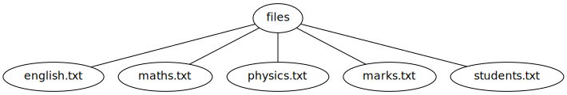
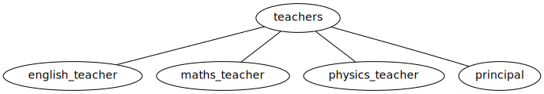
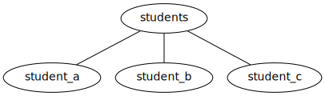
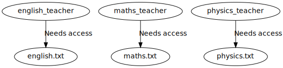
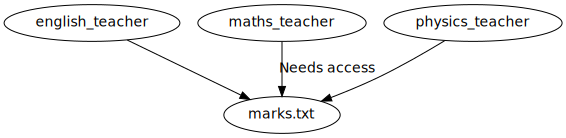
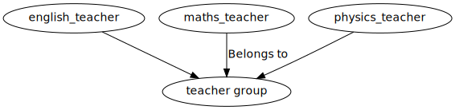

Welcome to the permissions experiment! This experiment is intended to provide an understanding of Linux file permissions. This experiment involves explanation of various command(s) which can be used to modify file permissions in Linux Operating System.
The experimental platform for this experiment is a command line interface which mimics the terminal of a Linux machine. This interface is intended to help in learning the basics of file permissions. A set of tasks which can be performed on the available command-line interface have also been provided.
This experiment is divided into various sections for ease of use. An objective section describes the objective of this experiment. A theory section provides necessary background and theory details for the experiment. An experiment section provides link to command-line interface along with a set of tasks to be performed. Quiz section contains questions to test the understanding of concepts covered as part of this experiment. Finally more reading material is suggested in further reading section.
Users are welcome to submit any feed-back related to this experiment using the feed-back section.

The objective of this experiment is to explain various types of Linux file permissions and their significance. By the end of this experiment the user should become comfortable with Linux file permissions in order to understand their implications. The experiment also aims at enabling the user in interpreting alphabetic permissions such as u+x and numeric permissions such as 755.

Note that throughout this experiment word 'file' has been used to indicate all types of files including regular files and directories. Linux also has other types of files, description of which is outside the scope of this lab. If a particular statement is true only for regular file or directory but not for both then this would be mentioned specifically.
Ownership: User owner, Group owner and Others
User owner
The understanding of Linux file permissions requires an understanding of various types of file ownership. In Linux all files have a user owner and a group owner. The user who creates a particular file becomes its owner automatically. Later another user can be made the owner of a file by changing file's ownership. Thus, by modifying ownership any file can be owned by any Linux user.
Groups
Multiple users can be grouped together in a user-group. There is no limit on the number of users that can be part of a group. It is even possible to have a Linux group with zero users.
To grant access to a file to more than one user groups are necessary. To allow more than one user to access to a file, all the required users are made part of a same user-group. Then the group owner of the file is changed to the newly created group. This allows all the members belonging to the group which owns the file to access the file while restricting others from doing so.
Note that it is possible for a user to belong to many different groups. A user always belongs to at least one special group called 'primary group'. Apart for this primary group, the user can also belong to any number of additional groups, called secondary groups.
Example 1
The following example can be used to understand afore mentioned points properly. Consider a Linux system with files: english.txt, maths.txt, physics.txt, marks.txt and students.txt as shown in Figure 1.

Figure
1: Files used in Example 1.
Also assume that the system under consideration has following teachers as users: english_teacher, maths_teacher, physics_teacher and principal as shown it Figure 2. The system also has student users such as student_a, student_b and student_c as shown in Figure 3.
-

Figure
2: Teacher users for Example 1.

Figure
3: Student users for Example 1.
Example 1 - Requirement 1
As part of this example let us consider a requirement where subject teachers' need access to files of their subjects. Thus english_teacher needs access to english.txt, maths_teacher needs access to maths.txt and physics_teacher needs access to physics.txt. This requirement is shown with the help of Figure 4 below.

Figure
4: Teachers needs access to files of their
subject.
This requirement is easy to satisfy by making respective teachers the user owners of the files of their subjects. Thus, if user owners for the files are set as shown in Table 1 below, then the above mentioned requirement would get satisfied.
| File name | User owner |
|---|---|
| english.txt | english_teacher |
| maths.txt | maths_teacher |
| physics.txt | physics_teacher |
Example 1: Requirement 2
Another requirement can be that all teachers need access to marks.txt file. This requirement can be satisfied by keeping all teachers in a group, say teachers, and then by making group owner of file marks.txt to be group 'teacher'. This particular requirement and its solution are explained with the help of Figures 5, 6 and Table 2.

Figure
5: All teachers need to access marks.txt
file

Figure
6: All teachers are made part of teacher group
| File name | Group owner |
|---|---|
| marks.txt | teacher group |
Thus basic access requirements where only one user needs access to a file or where a set of users need access to a file, can be satisfied by using users and groups, and by changing user owner and group owner of the file as per the requirement.
Access types or modes
Just specifying which user and which group should have access to particular file may not be enough. It may also be required to specify what type of access (read, write or execute) should a particular user have on a given file.
Regular file permissions
Three different types of permissions can be applied to regular files: read, write and execute which are described below.
- read
-
Read permissions on a regular file (not a directory) indicate that particular user or members of the group are allowed to read the file. For example, if a user or a group has read permissions on a text file then the user or members of the group would be allowed to see the contents of the text file using cat command. Read permissions are denoted by alphabet 'r' and number '4' at various occasions, hence Linux users should be comfortable with using 'r' or '4' for specifying read permissions as and when required.
- write
-
Write permissions on a regular file (not a directory) indicate that particular user or members of the group are allowed to write to the file. For example, if a user or a group has write permissions on a text file then the user or members of the group would be able to modify the contents of the text file using vim text editor. Write permissions are denoted by alphabet 'w' and number '2'.
- execute
-
Execute permissions on a regular file (not a directory) indicate that particular user or members of the group are allowed to execute (run) the file as a program. Note that execute permission may not make any sense on a generic text file as execution of normal language text is not defined. Thus, execute permissions make sense only for scripts and programs and not for every file.
But Linux will not object if execute permissions are assigned to some file which is not a program such as an image file, and thus cannot be executed. Error message or unexpected side-effects would be obtained while attempting to run the image file but not while assigning execute permissions to it.
Thorough understanding of execute permissions is not expected from beginner users right away. Hence do not worry if meaning of execute permissions is not very clear. It requires some time to really understand what execute permissions really mean. Execute permissions are denoted by alphabet 'x' or number '1' where ever required.
Note that as part of this experiment words 'folder' and 'directory' are used interchangeably and they both mean the same thing.
Directory or folder permissions
Similar to a regular file three different types of permissions can be applied to a folder or directory: read, write and execute. But the interpretation or significance of these permissions for a directory is quite different from that of a regular file. The explanation of these different types of permissions for a folder is described below:
- read
-
Read permissions on a directory (not a regular file) indicate that particular user or members of the group are allowed to list the contents of the directory (read the directory). For example, if a user or a group has read permissions on a directory then the user or members of the group would be allowed to see the contents of the directory using ls command. Same as in case of regular files, read permissions for directories also are denoted by alphabet 'r' or number '4'.
- write
-
Write permissions on a directory (not a regular file) indicate that particular user or members of the group are allowed to create new files inside the given directory. For example, if a user or a group has write permissions on a directory then the user or members of the group would be able to create new files inside the directory using mkdir or touch commands. Moreover write permissions on a directory also allow users to rename or delete the files present inside the directory using rmdir or rm command.
- execute
-
Execute permissions on a directory (not a regular file) indicate that particular user or members of the group are allowed to change directory (cd) to given folder and also access files inside the given folder. If a user does not has execute permissions on a folder, then the user cannot access any file present inside the folder.

If you already have Virtual Labs login credentials, please click here.
In case you do not have login credentials, please click here.
Now that we have learnt about file permissions, we have an exercise for you. The shell above supports few basic shell commands. Play along to get some hands-on experience of the interface. When you are ready to perform the exercise, which is a set of 5 tasks, enter the command "start".try: start,next,prev,clear,logout.


Please provide us feedback here